Plants vs Zombies 1
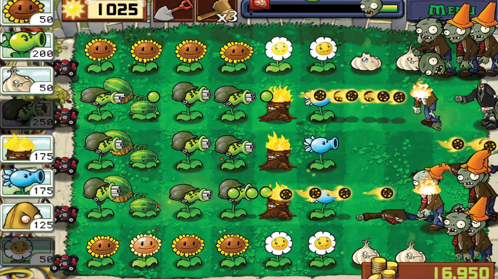
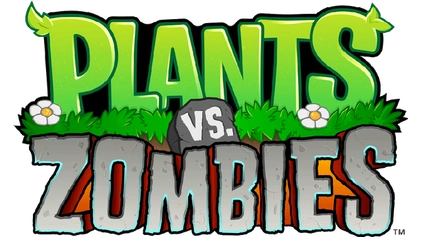
O que você faz quando há um zumbi no seu gramado? Se sua resposta foi "começo a plantar flores para
derrotá-lo", então já deve ter ouvido falar de Plants vs. Zombies. Munido de dezenas de plantas destruidoras
de zumbis, desde a clássica Disparervilha até a cruel Bomba Cereja, você precisa pensar rápido e plantar
ainda mais rápido para deter todos os tipos de zumbis e fazê-los morrer de medo. E justo quando você acha
que está no controle da situação, obstáculos como um sol poente, um nevoeiro rasteiro e uma piscina aumentam
o desafio. Com cinco modos de jogo para explorar, a diversão nunca morre!
Plantas principais
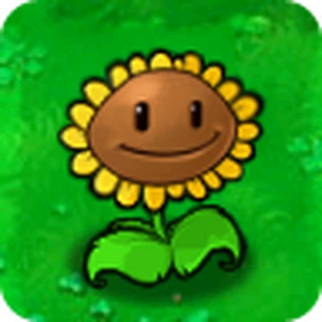
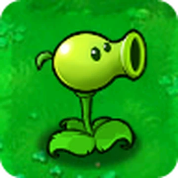
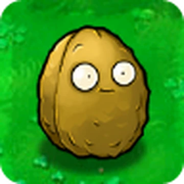
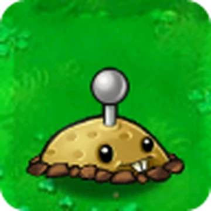
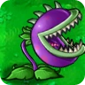
Zumbis principais
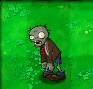
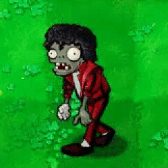
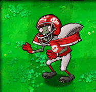
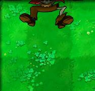
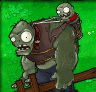